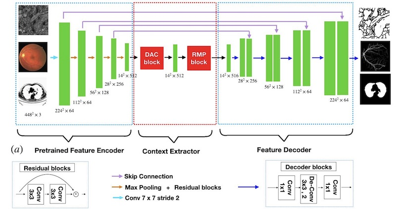

Back to Homepage
Medical Image Segmentation via Deep Network
MNet: Multi-label Deep Network (IEEE TMI 2018)

In this work, we proposed a deep learning architecture, named M-Net, which solves the OD and OC segmentation jointly in a one-stage multi-label system. The proposed M-Net mainly consists of multi-scale input layer, U-shape convolutional network, side-output layer, and multi-label loss function. The multi-scale input layer constructs an image pyramid to achieve multiple level receptive field sizes. The U-shape convolutional network is employed as the main body network structure to learn the rich hierarchical representation, while the side-output layer acts as an early classifier that produces a companion local prediction map for different scale layers. Finally, a multi-label loss function is proposed to generate the final segmentation map.
- Huazhu Fu, Jun Cheng, Yanwu Xu, Damon Wing Kee Wong, Jiang Liu, and Xiaochun Cao, "Joint Optic Disc and Cup Segmentation Based on Multi-label Deep Network and Polar Transformation", IEEE Transactions on Medical Imaging (TMI), vol. 37, no. 7, pp. 1597-1605, 2018.
[PDF] [Code]
CE-Net: Context Encoder Network (IEEE TMI 2019)

In this paper, we propose a context encoder network (referred to as CE-Net) to capture more high-level information and preserve spatial information for 2D medical image segmentation. CE- Net mainly contains three major components: a feature encoder module, a context extractor and a feature decoder module. We use pretrained ResNet block as the fixed feature extractor. The context extractor module is formed by a newly proposed dense atrous convolution (DAC) block and residual multi-kernel pooling (RMP) block. We applied the proposed CE-Net to different 2D medical image segmentation tasks. Comprehensive results show that the proposed method outperforms the original U-Net method and other state-of-the-art methods for optic disc segmentation, vessel detection, lung segmentation, cell contour segmentation and retinal optical coherence tomography layer segmentation.
- Zaiwang Gu, Jun Cheng, Huazhu Fu, Kang Zhou, Huaying Hao, Yitian Zhao, Tianyang Zhang, Shenghua Gao, Jiang Liu, "CE-Net: Context Encoder Network for Medical Image Segmentation", IEEE Transactions on Medical Imaging (TMI), 2019, In press. (DOI: 10.1109/TMI.2019.2903562) [PDF] [Code]
DeepVessel: Vessel Segmentation via Deep Learning (MICCAI 2016)

Retinal vessel segmentation is a fundamental step for various ocular imaging applications. In this paper, we formulate the retinal vessel segmentation problem as a boundary detection task and solve it using a novel deep learning architecture. Our method is based on two key ideas: (1) applying a multi-scale and multi-level Convolutional Neural Network (CNN) with a side-output layer to learn a rich hierarchical representation, and (2) utilizing a Conditional Random Field (CRF) to model the long-range interactions between pixels. We combine the CNN and CRF layers into an integrated deep network called DeepVessel. Our experiments show that the DeepVessel system achieves state-of-the-art retinal vessel segmentation performance on the DRIVE, STARE, and CHASE_DB1 datasets with an efficient running time.
- Huazhu Fu, Yanwu Xu, Stephen Lin, Damon Wing Kee Wong, Jiang Liu, "DeepVessel: Retinal Vessel Segmentation via Deep Learning and Conditional Random Field", in International Conference on Medical Image Computing and Computer Assisted Intervention (MICCAI), 2016, pp. 132-139. [PDF] Results on DRIVE, STARE, and CHASE_DB1 datasets: [on OneDrive] [on BaiduYun](~44MB)